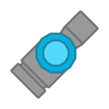

The Model-C-Pawner is a Software that is Obliterator-themed. It upgrades from Software and Obliterator at level 60.
Design
The Tank Itself
It resembles a Software but the front barrel is a Obliterator.
Its body is dodecagonal with a dodecagonal light-colored decoration on top.
The Minion

How the minion actually looks like
It has a complicated body shape with 2 Obliterators and 2 Thrusters.
Technical
"Protectorate" is the official Woomy term for a Software minion.
The tank itself
It is a Obliterator that has a singular Obliterator-themed protectorate as a minion.
The Protectorate
The protectorate itself has 2 Obliterator barrels, 2 Bateau thrusters, which increase its speed and max speed by 30% compared to a regular Software protectorate, but the protectorate itself only has 70% Software protectorate health.
Trivia
This tank is named after the Model-C starter from Cosmoteer.

Tier 5 Tank
Upgrades from Software and Obliterator
Weapons:
- 1 Obliterator Barrel
- 1 Model-C-Pawner
Inherits base body stats from Software
Spawns an Obliterator-themed minion to fight for it.